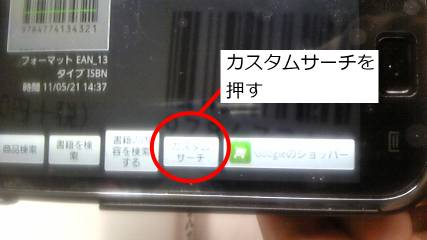
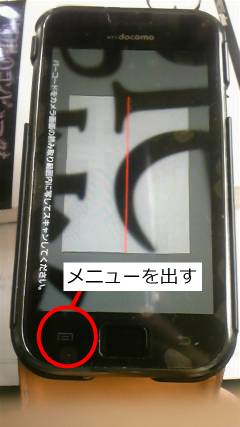
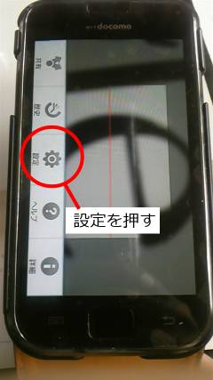
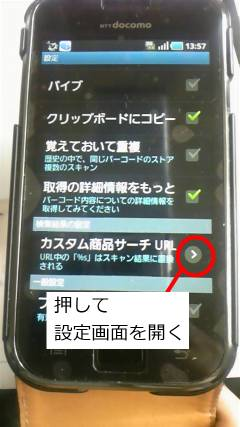
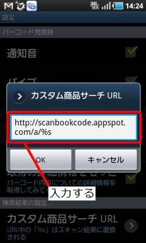

AndroidのBarcode Scanner(QRコードスキャナー)
での使用方法/設定方法です。
バーコードをスキャンすると、メニューが表示される。
メニューの中から「カスタムサーチ」を選択する。

データが登録されたのち、商品の説明のページが開く。
戻る
Barcode Scanner(QRコードスキャナー)のメニューを出す。

設定画面を開く。

カスタム商品サーチ URLの設定画面を開く。

URLを入力する。
http://scanbookcode.appspot.com/a/%s
と(1行で)入力する。

OKを押して入力画面を閉じ、戻るボタンでスキャナーの画面に戻る。
戻る